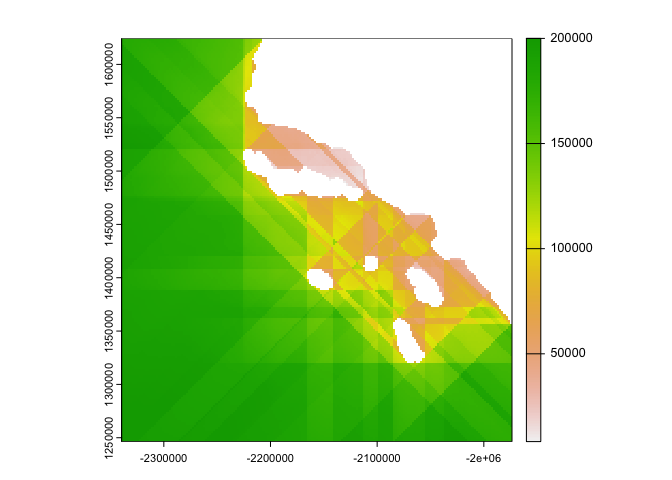

The goal of fetchr is to provide a fast and efficient raster based method for calculating fetch lengths across thousands of water grid cells. Calculating fetch lengths, the distance that wind can blow in a constant direction over a body of water without interruption, can be a slow and memory intensive process when done on thousands of points of interest in multiple directions. fetchr attempts to fix this problem and allows for thousands of fetch calculations to be performed in a fraction of the time that other methods take.
Installation
You can install the development version of fetchr from GitHub with:
# install.packages("devtools")
devtools::install_github("anguswg-ucsb/fetchr")Coastline raster
If we start with a raster representing the Southern California coast near Santa Barbara, CA.
library(fetchr)
# land raster
land_rast <- terra::rast(fetchr::land)
terra::plot(land_rast, col = "#2e8b57")
Make a binary land water rasters
We can take this land raster, indicate which cells are water cells, and create a binary land water raster (land = 0, water = 1).
# binary land water raster
landwater <- fetchr::get_landwater(
r = land_rast, # land raster
water_value = NA, # cells with a value of NA are classified as water, all other cells are land
res = terra::res(land_rast)[1] # return raster with the same cell resolution as input raster
)
#> Creating landwater raster...
terra::plot(landwater, col = c("#2e8b57", "#add8e6"))
This raster now meets all the specification for using get_fetch():
- Binary cell values (land cells = 0 and water cells = 1)
- Projected Coordinate Reference System
- Regular grid cell size (same x and y cell resolution)
Calculate fetch length
Internally, get_fetch() will coerce polygon/multipolygon geometries and rasters into the required binary landwater raster. It is recommended to provide either an sf/terra polygon or a raster/terra raster with a single value for land cells and NA values for water cells. To calculate fetch distances, we can simply provide an sf/terra polygon or raster/terra raster to get_fetch(),
system.time(
fetch <- fetchr::get_fetch(
r = land_rast, # binary land water raster
max_dist = 200000, # maximum distance to calculate fetch in meters (200km)
ncores = 12, # number of computer cores to use
verbose = TRUE
)
)
#> Calculating Fetch...
#> Calculating north/south/east/west distances
#> Calculating diagonal distances
#> user system elapsed
#> 5.20 0.33 12.19
plot(fetch)
In this example here, calculating fetch distances for > 24,000 water cells took about ~12 seconds, or ~0.00083 seconds per point. That is a ~ 99.92% reduction in computation time compared to various other polygon based methods out there!